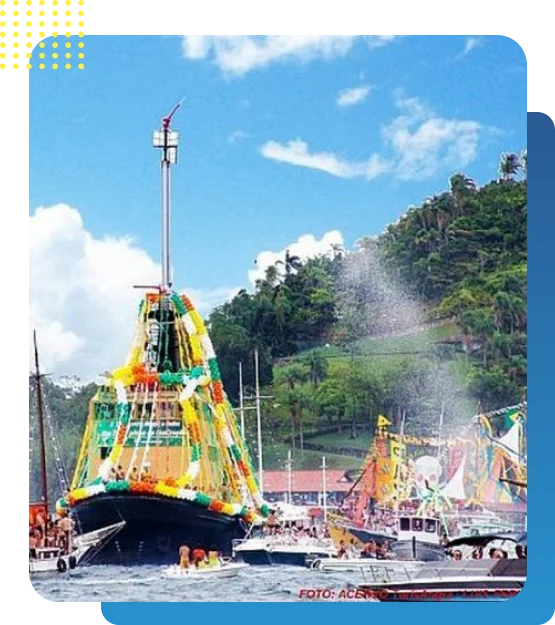

Associação dos Organizadores de Barco da Procissão Marítima de Angra dos Reis
Compre o seu passaporteFundada em 2008, a AOBPMAR tem como objetivo principal abrilhantar o evento da Procissão Marítima de Angra dos Reis, contribuindo ativamente para a preservação da cultura, tradição e organização desse importante acontecimento. A Associação representa os principais barcos participantes da procissão e desempenha um papel crucial na manutenção e continuidade dessa celebração, garantindo que o evento permaneça vivo e vibrante em nossa cidade.
A Procissão Marítima de Angra dos Reis teve origem em 1978, quando Boni (José Bonifácio de Oliveira Sobrinho), diretor da Rede Globo, inspirado por festas que aconteciam em outras cidades, reuniu um grupo de amigos e, com as imagens de Nosso Senhor dos Navegantes e Nossa Senhora da Piedade, criou a primeira Procissão Marítima.
Após três anos, os santos deixaram de ser utilizados para evitar conflitos com a Igreja Católica, e a festa tornou-se profana, com uma única preocupação: comemorar a chegada do novo ano.
A concentração da Procissão Marítima acontece sempre com uma atração musical para esquentar a competição, na Ilha da Gipóia, a partir do meio-dia, e depois os barcos seguem até a Praia do Anil, no Centro de Angra dos Reis.
Esse percurso é de sete quilômetros, sendo feito em aproximadamente duas horas.
O júri, normalmente composto por celebridades, percorre a procissão de lancha, avaliando a animação da galera, a alegoria e a originalidade das embarcações. A festa de renome nacional reúne mais de 1.500 embarcações (escunas, saveiros, lanchas, iates, traineiras, entre outros tipos de embarcações), onde se concentra um público de aproximadamente 30 mil pessoas, selecionadas e formadoras de opinião, para receber o ano que se inicia.
É nesse cenário que a Associação de Organizadores de Barcos da Procissão Marítima de Angra dos Reis realizará, em conjunto com a prefeitura, no dia 1º de janeiro de 2025, a 46° PROCISSÃO MARÍTIMA DE ANGRA DOS REIS, a maior festa náutica popular realizada no réveillon do Brasil. O evento impulsiona o turismo na região e levanta o astral de nossa cidade, com uma abertura de ano em que os foliões poderão acompanhar a festa no lindo mar de Angra, terminando em terra com uma superestrutura.
Entre em contato conosco para mais informações:
Email: contato@aobpmar.com.br
Telefone: (24) 99999-9999